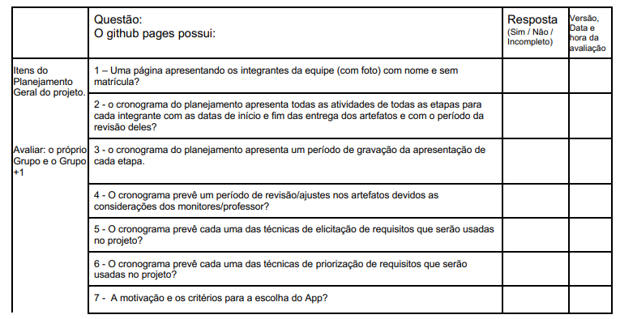
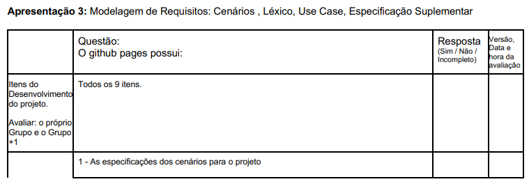
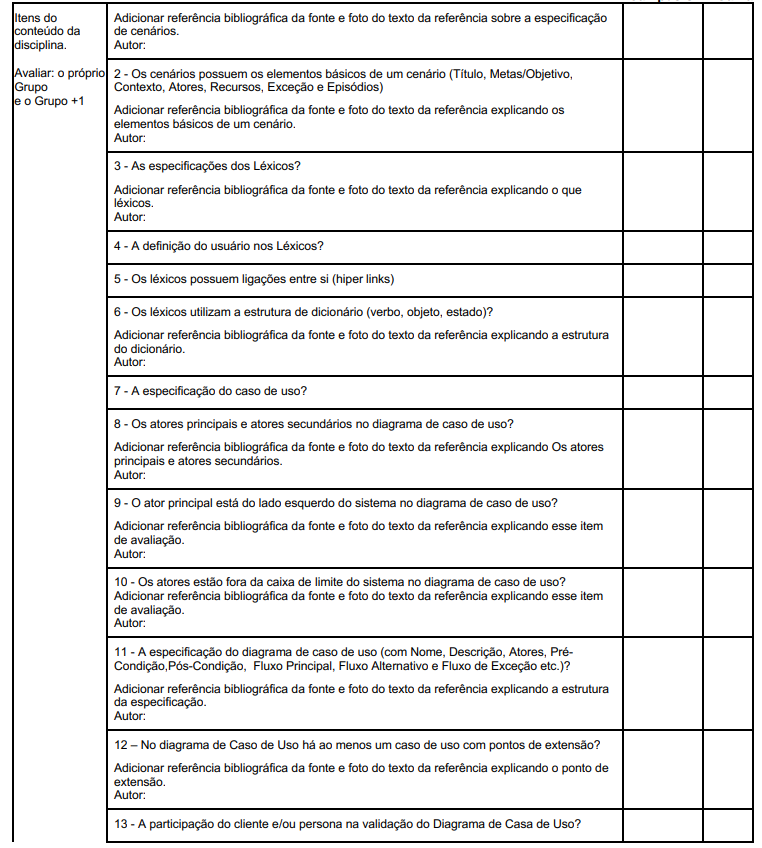
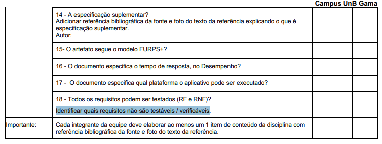

Lista de Verificação - Entrega 3
Introdução
Este documento apresenta uma lista de verificação criada para o Grupo 4 e o Grupo+1 (Grupo 5) referente a Etapa 3 do projeto, com o objetivo de garantir que os artefatos iniciais estejam de acordo com os requisitos e especificações estabelecidas. O checklist foi sugerido pelo professor como uma ferramenta prática para confirmar que todas as etapas estão cumpridas corretamente antes de avançar para as fases seguintes.
Checklist como Método de Verificação
O checklist, que significa Lista de Verificação, uma técnica importante durante a revisão das etapas do projeto, ajudando a garantir que cada parte esteja em conformidade com os requisitos estabelecidos. Para validar a eficácia e a completude do checklist, utilizaremos a técnica de inspeção, que consiste em uma revisão sistemática para verificar a clareza, relevância e aplicabilidade de cada item listado, tanto do nosso grupo quanto do grupo avaliado. Seu principal objetivo é:
- Identificar possíveis erros em qualquer parte do projeto.
- Verificar se o projeto atende aos requisitos especificados.
- Assegurar que o trabalho foi feito conforme os padrões e diretrizes definidas pelo professor.
- Garantir consistência e uniformidade.
- Facilitar o gerenciamento do projeto tornando-o mais organizado e controlado.
Checklists - Entrega 3
As Tabelas 1 e 2 apresentam checklists para os elementos de desenvolvimento do projeto e conteúdo da disciplina, respectivamente, presentes no GitPages, garantindo que as etapas e os requisitos técnicos sejam atendidos de acordo com o Plano de Ensino do professor.
Desenvolvimento do Projeto
Tabela 1: Checklist de Desenvolvimento do Projeto
| ID | Item | Referência |
|---|---|---|
| DS01 | Padronização do Histórico de Versão | BARROS, Andre. Plano de Ensino, RE-012025, Turma 3, p. 2. Aprender3. Acesso em: 18 maio 2025. |
| DS02 | Autor e revisor para cada artefato | BARROS, Andre. Plano de Ensino, RE-012025, Turma 3, p. 2. Aprender3. Acesso em: 18 maio 2025. |
| DS03 | Referências e/ou bibliografia em todos os artefatos | BARROS, Andre. Plano de Ensino, RE-012025, Turma 3, p. 2. Aprender3. Acesso em: 18 maio 2025. |
| DS04 | Legenda e fonte em todas as imagens e tabelas | BARROS, Andre. Plano de Ensino, RE-012025, Turma 3, p. 2. Aprender3. Acesso em: 18 maio 2025. |
| DS05 | Introdução do texto dos artefatos | BARROS, Andre. Plano de Ensino, RE-012025, Turma 3, p. 2. Aprender3. Acesso em: 18 maio 2025. |
| DS06 | Cronograma executado além do inicialmente planejado | BARROS, Andre. Plano de Ensino, RE-012025, Turma 3, p. 1. Aprender3. Acesso em: 18 maio 2025. |
| DS07 | Atas das reuniões | BARROS, Andre. Plano de Ensino, RE-012025, Turma 3, p. 2. Aprender3. Acesso em: 18 maio 2025. |
| DS08 | Gravação das reuniões | BARROS, Andre. Plano de Ensino, RE-012025, Turma 3, p. 2. Aprender3. Acesso em: 18 maio 2025. |
| DS09 | Upload de apresentação no YouTube como não "listado" | BARROS, Andre. Plano de Ensino, RE-012025, Turma 3, p. 2. Aprender3. Acesso em: 18 maio 2025. |
Autora: Amanda Cruz, 2025
Conteúdo da Disciplina
Tabela 2: Checklist de Conteúdo da Disciplina - Modelagem
| ID | Item | Referência |
|---|---|---|
| CD01 | Possui as especificações dos cenários para o projeto | BARROS, Andre. Plano de Ensino, RE-012025, Turma 3, p. 4. Aprender3. Acesso em: 18 maio 2025. |
| CD02 | Os cenários possuem os elementos básicos de um cenário (Título, Metas/Objetivo, Contexto, Atores, Recursos, Exceção e Episódios) | BARROS, Andre. Plano de Ensino, RE-012025, Turma 3, p. 5. Aprender3. Acesso em: 18 maio 2025. |
| CD03 | Estão presentes as especificações dos Léxicos? | BARROS, Andre. Plano de Ensino, RE-012025, Turma 3, p. 5. Aprender3. Acesso em: 18 maio 2025. |
| CD04 | Possui a definição do usuário nos Léxicos? | BARROS, Andre. Plano de Ensino, RE-012025, Turma 3, p. 5. Aprender3. Acesso em: 18 maio 2025. |
| CD05 | Os léxicos possuem ligações entre si (hiperlinks)? | BARROS, Andre. Plano de Ensino, RE-012025, Turma 3, p. 5. Aprender3. Acesso em: 18 maio 2025. |
| CD06 | Os léxicos utilizam a estrutura de dicionário (verbo, objeto, estado)? | BARROS, Andre. Plano de Ensino, RE-012025, Turma 3, p. 5. Aprender3. Acesso em: 18 maio 2025. |
| CD07 | É encontrada a especificação do caso de uso? | BARROS, Andre. Plano de Ensino, RE-012025, Turma 3, p. 5. Aprender3. Acesso em: 18 maio 2025. |
| CD08 | Tem-se os atores principais e atores secundários no diagrama de caso de uso? | BARROS, Andre. Plano de Ensino, RE-012025, Turma 3, p. 5. Aprender3. Acesso em: 18 maio 2025. |
| CD09 | Tem-se o ator principal presente do lado esquerdo do sistema no diagrama de caso de uso? | BARROS, Andre. Plano de Ensino, RE-012025, Turma 3, p. 5. Aprender3. Acesso em: 18 maio 2025. |
| CD10 | Os atores estão fora da caixa de limite do sistema no diagrama de caso de uso? | BARROS, Andre. Plano de Ensino, RE-012025, Turma 3, p. 5. Aprender3. Acesso em: 18 maio 2025. |
| CD11 | Possui a especificação do diagrama de caso de uso (com Nome, Descrição, Atores, PréCondição,Pós-Condição, Fluxo Principal, Fluxo Alternativo e Fluxo de Exceção etc.)? | BARROS, Andre. Plano de Ensino, RE-012025, Turma 3, p. 5. Aprender3. Acesso em: 18 maio 2025. |
| CD12 | No diagrama de Caso de Uso há ao menos um caso de uso com pontos de extensão? | BARROS, Andre. Plano de Ensino, RE-012025, Turma 3, p. 5. Aprender3. Acesso em: 18 maio 2025. |
| CD13 | A participação do cliente e/ou persona na validação do Diagrama de Casa de Uso? | BARROS, Andre. Plano de Ensino, RE-012025, Turma 3, p. 5. Aprender3. Acesso em: 18 maio 2025. |
| CD14 | Contém especificação suplementar? Com referências bibliograficas e foto do texto de referência explicando o que é a especificação suplementar? | BARROS, Andre. Plano de Ensino, RE-012025, Turma 3, p. 6. Aprender3. Acesso em: 18 maio 2025. |
| CD15 | O artefato segue o modelo FURPS+? | BARROS, Andre. Plano de Ensino, RE-012025, Turma 3, p. 6. Aprender3. Acesso em: 18 maio 2025. |
| CD16 | O documento especifica o tempo de resposta, no Desempenho? | BARROS, Andre. Plano de Ensino, RE-012025, Turma 3, p. 6. Aprender3. Acesso em: 18 maio 2025. |
| CD17 | O documento especifica qual plataforma o aplicativo pode ser executado? | BARROS, Andre. Plano de Ensino, RE-012025, Turma 3, p. 6. Aprender3. Acesso em: 18 maio 2025. |
| CD18 | Todos os requisitos podem ser testados (RF e RNF)? Identificando quais requisitos não são testáveis/verificáveis? | BARROS, Andre. Plano de Ensino, RE-012025, Turma 3, p. 6. Aprender3. Acesso em: 18 maio 2025. |
Autora: Amanda Cruz, 2025
Cenários
A Tabela 3 abaixo apresenta uma lista de verificação para os cenários. O objetivo é garantir que os cenários desenvolvidos estejam completos, claros e alinhados com os objetivos do projeto, facilitando a identificação de requisitos e a compreensão das interações entre usuários e sistema.
Tabela 3: Checklist - Cenários
| ID | Tópico | Descrição | Resposta (Sim/Não) | Referência |
|---|---|---|---|---|
| 1 | Cenário | O cenário possui um ator principal com objetivos claros? | Barbosa et al., 2021, p. 172-177 | |
| 2 | Cenário | Descreve um enredo com sequência de ações e eventos concretos? | Barbosa et al., 2021, p. 172-177 | |
| 3 | Cenário | Inclui contexto ou ambiente que motiva ou explica as ações dos atores? | Barbosa et al., 2021, p. 172-177 | |
| 4 | Cenário | Apresenta as ações observáveis realizadas pelos atores? | Barbosa et al., 2021, p. 172-177 | |
| 5 | Cenário | Contempla eventos externos ou reações do sistema/ambiente? | Barbosa et al., 2021, p. 172-177 | |
| 6 | Cenário | Considera o planejamento mental dos atores? Contém avaliação mental do ator sobre as ações e resultados? | Barbosa et al., 2021, p. 172-177 | |
| 7 | Cenário | Inclui as características pessoais relevantes dos atores? Caso use personas, os atores são personas previamente elaboradas? | Barbosa et al., 2021, p. 172-177 | |
| 8 | Cenário | Título que descreve brevemente a situação. Há descrição situação inicial dos atores? | Barbosa et al., 2021, p. 172-177 | |
| 9 | Cenário | Referência a outros cenários alternativos para atingir os mesmos objetivos? | Barbosa et al., 2021, p. 172-177 | |
| 10 | Cenário | Ajuda a capturar requisitos e entender atividades? Permite explorar soluções de design? | Barbosa et al., 2021, p. 172-177 | |
| 11 | Cenário | Apoia a avaliação da adequação do produto aos usuários? | Barbosa et al., 2021, p. 172-177 | |
| 12 | Cenário | Foi usada a técnica de questionamento sistemático para aprofundar proposições: "Por quê? Como? O que é? X pode ser feito da forma Y? X faz parte de Y?" | Barbosa et al., 2021, p. 172-177 | |
| 13 | Cenário | Os cenários ajudam a construir a meta-mensagem designer–usuário? | Barbosa et al., 2021, p. 172-177 | |
| 14 | Cenário | Contêm perguntas do designer para investigar ou confirmar aspectos com os usuários? | Barbosa et al., 2021, p. 172-177 |
Diagrama de Caso de Uso
A Tabela 4 abaixo apresenta uma lista de verificação para o Diagrama de Caso de Uso. O objetivo é garantir que todos os elementos essenciais estejam presentes e que a representação gráfica siga as diretrizes da UML.
Tabela 4: Checklist - Diagrama de Caso de Uso
| ID | Tópico | Descrição | Resposta (Sim/Não) | Referência |
|---|---|---|---|---|
| 1 | Caso de Uso | O caso de uso descreve uma sequência clara de interações entre o sistema e um ator externo? | Wiegers & Beatty, 2013, p. 144 | |
| 2 | Caso de Uso | Existe um ator externo identificado que interage com o sistema? | Wiegers & Beatty, 2013, p. 144 | |
| 3 | Caso de Uso | O resultado do caso de uso tem valor para o ator (usuário)? | Wiegers & Beatty, 2013, p. 144 | |
| 4 | Caso de Uso | O nome do caso de uso está no formato verbo e objeto? | Wiegers & Beatty, 2013, p. 144 | |
| 5 | Caso de Uso | O nome do caso de uso é forte e descritivo? | Wiegers & Beatty, 2013, p. 144 | |
| 6 | Caso de Uso | O nome do caso de uso torna evidente o valor entregue ao usuário? | Wiegers & Beatty, 2013, p. 144 | |
| 7 | Caso de Uso | O caso de uso identifica claramente os atores envolvidos na interação? | Sommerville, 2011, p. 74 | |
| 8 | Caso de Uso | O tipo de interação está nomeado de forma clara? | Sommerville, 2011, p. 74 | |
| 9 | Caso de Uso | O caso de uso é complementado com descrição textual ou modelos gráficos (ex: diagrama de sequência, estados)? | Sommerville, 2011, p. 74 | |
| 10 | Caso de Uso | Está documentado em um diagrama de casos de uso de alto nível? | Sommerville, 2011, p. 74 | |
| 11 | Caso de Uso | A representação gráfica segue a notação UML (elipses, atores 'palito', linhas de ligação)? | Sommerville, 2011, p. 74 | |
| 12 | Caso de Uso | Existem setas opcionais para indicar direção da interação? | Sommerville, 2011, p. 74 | |
| 13 | Caso de Uso | O caso de uso cobre múltiplos cenários, incluindo exceções? | Sommerville, 2011, p. 74 | |
| 14 | Caso de Uso | O caso de uso identifica interações com usuários e outros sistemas? | Sommerville, 2011, p. 74 | |
| 15 | Caso de Uso | O caso de uso foi utilizado como técnica para elicitar requisitos de stakeholders? | Sommerville, 2011, p. 75 | |
| 16 | Caso de Uso | Há consciência de suas limitações quanto a requisitos não funcionais e de domínio? | Sommerville, 2011, p. 75 | |
| 17 | Caso de Uso | Existem relações de include e/ou extend? | DevMedia, 2012 | |
| 18 | Caso de Uso | O caso de uso tem um cenário? | DevMedia, 2012 | |
| 19 | Caso de Uso | O caso de uso tem um ator? | DevMedia, 2012 | |
| 20 | Caso de Uso | O caso de uso tem Use Case? | DevMedia, 2012 | |
| 21 | Caso de Uso | Existe comunicação no caso de uso? | DevMedia, 2012 |
Especificação Suplementar
Abaixo está uma lista de verificação para a Especificação Suplementar, apresentada na Tabela 5. O objetivo é garantir que todos os requisitos funcionais e não funcionais estejam claramente definidos e documentados.
Tabela 5: Checklist - Especificação Suplementar
| ID | Tópico | Descrição | Resposta (Sim/Não) | Referência |
|---|---|---|---|---|
| 1 | Especificação Suplementar | Os requisitos funcionais (em funcionalidades) estão sendo expressos no estilo de linguagem natural? | BRASIL, s.d. | |
| 2 | Especificação Suplementar | A identificação do projeto contém projeto, requisitante e gerente de projetos? | BRASIL, s.d. | |
| 3 | Especificação Suplementar | A especificação suplementar contém a finalidade, o escopo, as definições, os acrônimos, as abreviações, as referências e a visão geral da Especificação Suplementar? | BRASIL, s.d. | |
| 4 | Especificação Suplementar | A especificação suplementar capturou requisitos não diretamente capturados imediatamente nos casos de uso? | BRASIL, s.d. | |
| 5 | Especificação Suplementar | A especificação suplementar contém requisitos separados em especificações (como requisitos ambientais e de licenciamento)? | BRASIL, s.d. | |
| 6 | Especificação Suplementar | Os requisitos estão descritos com critérios mensuráveis, objetivos e verificáveis? | BRASIL, s.d. | |
| 7 | Especificação Suplementar | A linguagem utilizada evita ambiguidades e subjetividade? | BRASIL, s.d. |
Referências
As referências das Tabelas 1 e 2 tiveram como referência as Figuras 1 a 4.
BARROS, André. Plano de Ensino, RE-012025, Turma 3. Disponível em: https://aprender3.unb.br/pluginfile.php/3106711/mod_resource/content/55/Lista%20de%20Verifificac%CC%A7a%CC%83o%20-%20Plano_de_Ensino%20RE%20012025%20Turma%2003%20v1.pdf. Acesso em: 04 maio 2025.
Figura 1: Lista de Verificação - Desenvolvimento (DS01 - DS09)

Fonte: André Barros, 2025
Figura 2: Lista de Verificação - Planejamento (CD01)

Fonte: André Barros, 2025
Figura 3: Lista de Verificação - Planejamento (CD02-CD13)

Fonte: André Barros, 2025
Figura 4: Lista de Verificação - Planejamento (CD14-CD18)

Fonte: André Barros, 2025
BRASIL. MINISTÉRIO DA CIÊNCIA, TECNOLOGIA, INOVAÇÕES E COMUNICAÇÕES. Secretaria-Executiva. Diretoria de Tecnologia da Informação. Coordenação-Geral de Sistemas. Sigla do Projeto – Nome do Projeto: especificação suplementar. Versão 1.0. [recurso eletrônico]. Brasília, [s.d.]. Disponível em: https://aprender3.unb.br/pluginfile.php/3096129/mod_resource/content/2/SiglaProjeto_EspecificacaoSuplementar.pdf.
Imagem 1: Especificação Suplementar
Fonte: Adaptado de BRASIL. MINISTÉRIO DA CIÊNCIA, TECNOLOGIA, INOVAÇÕES E COMUNICAÇÕES. Secretaria-Executiva. Diretoria de Tecnologia da Informação. Coordenação-Geral de Sistemas. Sigla do Projeto – Nome do Projeto: especificação suplementar. Versão 1.0. [recurso eletrônico]. Brasília, [s.d.].
Barbosa, S. D. J.; Silva, B. S. da; Silveira, M. S.; Gasparini, I.; Darin, T.; Barbosa, G. D. J. (2021) Interação Humano-Computador e Experiência do usuário. Autopublicação. ISBN: 978-65-00-19677-1. p. 172-177. Leanpub
WIEGERS, Karl E.; BEATTY, Joy. Software Requirements. 3. ed. Redmond: Microsoft Press, 2013, p. 144.
SOMMERVILLE, Ian. Engenharia de Software. 9. ed. São Paulo: Pearson, 2011, p. 74-75. Disponível em: https://www.facom.ufu.br/~william/Disciplinas%202018-2/BSI-GSI030-EngenhariaSoftware/Livro/engenhariaSoftwareSommerville.pdf
DEVMEDIA. O que é UML e diagramas de caso de uso: introdução prática à UML. 2012. Disponível em: https://www.devmedia.com.br/o-que-e-uml-e-diagramas-de-caso-de-uso-introducao-pratica-a-uml/23408.
PDF Que une as referências
Especificação Suplementar
Caso de Uso
Cenários
Histórico de Versão
| Versão | Data | Descrição | Autor | Revisor |
|---|---|---|---|---|
| 1.0 | 18/05/2025 | Criando a pagina | João Pedro Costa | Ryan Salles |
| 1.1 | 18/05/2025 | Adicionando lista de verificação de casos de uso | João Pedro Costa | Amanda Cruz |
| 1.2 | 18/05/2025 | Adicionando lista de verificação de cenários | João Pedro Costa | Amanda Cruz |
| 1.3 | 18/05/2025 | Adicionando lista de verificação de especificação suplementar | João Pedro Costa | Amanda Cruz |
| 1.4 | 18/05/2025 | Adicionando lista de verificação do professor | Amanda Cruz | João Pedro Costa |
| 1.5 | 18/05/2025 | Tabela quebrada consertada | Ryan Salles | João Pedro Costa |